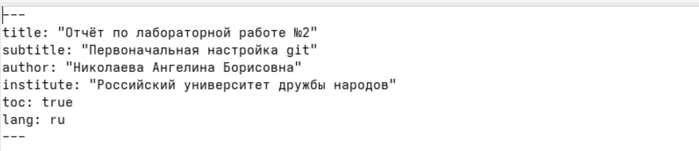
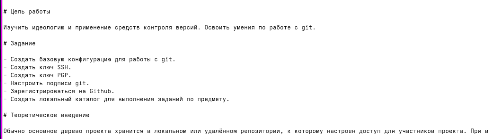
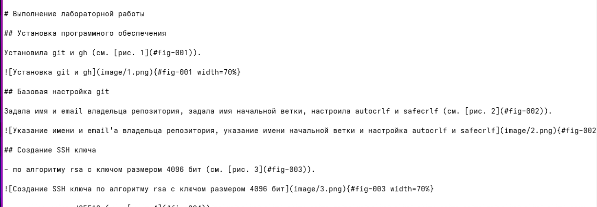

Докладчик
- Николаева Ангелина Борисовна
- Студентка НКАбд-04-25
- Российский университет дружбы народов
- [1032253612@rudn.ru]

Научиться оформлять отчеты с помощью легковесного языка разметки Markdown
pdf,
docx и md.Заголовки: # H1, ## H2,
### H3, #### H4
Форматирование: **bold**,
*italic*, ***bold+italic***
Цитаты: > text
Списки: маркированные (- или
*), нумерованные (1.) с поддержкой
вложенности
Ссылки: [текст](file.md)
Код: встроенный или блоки с указанием языка
Формулы: внутритекстовые ($...$) и
выключные ($$...$$) с возможностью ссылок
Инструменты: Pandoc (pandoc),
pandoc-citeproc, pandoc-crossref
Базовые команды: ```bash pandoc README.md -o README.pdf # в PDF pandoc README.md -o README.docx # в Word
Указала основную информацию о лабораторной работе.

Указала цель, задание и теоретическое введение лабораторной работы.

Описала процесс выполнения лабораторной работы.

Ответила на контрольные вопросы.
Описала выводы к лабораторной работе.
В ходе данной лабораторной работы я научился оформалять отчёты с помощью легковесного языка разметки Markdown.